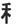

| TEI |
TAKE off your clothes to the extent that you cannot be shown on broadcast tv. |
|
This wheat is popular to the extent that it is even fed to the mouth of the king! |
| ほど |
an extent.- You shouldn't joke to that extent. You shouldn't drink to that extent. He's not good at ska-bashing to the extent his father was. And so on.
KANA
★★★☆☆ |
| 程度 |
a degree or extent
★★★☆☆
|
| 成程 |
oh, I see!
★★★☆☆
KUNKUNKANA
"ohhhh, now I see!" (very similar to a hearty 分かった！！ （わかった）, but it also has the nuance of, understanding AND agreeing whole-heartedly) |
| 過程 |
a process
★★☆☆☆
|
| 程々 にｘｘｘｘ |
don't do XXX too much! ★☆☆☆☆ KUNKUN |
| Meaning | Hint | Radical | |
|---|---|---|---|
| 績 | achievements | STRING | 糸 |
| 積 | pile up | WHEAT |  |
| 程 | extent | KING | 王 |
She had a STRING of achievements in the field of piling up WHEAT.
The KING has the greatest extent of power.
|
extent
程度 程 |
 KANJIDAMAGE
KANJIDAMAGE